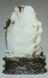

台湾で故宮博物院へも行ってきた。５年ほど前、訪台したときにも妻と行っているけれど、「貴方は３回も行ってるのに、ワタシは１回しか行ってない..ブツブツブツ...」と云うのでまた行くことに。(^-^；
何度 行っても見所満載で、熱心に見ているうちに夕方になってしまった。別館へも行きたかったので、何気なく妻に「別館へも行きたいが、もう閉館時間が近いかなぁ？」と云った。すると妻が近くで清掃作業をしていた中年の女性にするすると近づき、「すみません、ここは何時まででしょう」 もち日本語(笑)
その女性がビックリして中国語で何か答えた。すると妻が「すみません。中国語 ワカリマセン」(^-^； 相手がさらに中国語で「○●※▼△＊☆□・・・」 警備員が飛んできました....(>_<；
鯉魚躍龍門（登竜門）は、日本風にいえば鯉の滝登り。
古代中国の伝説の皇帝 禹（う）が黄河の治水事業を行った。で 山西省に龍門山という急峻な山があったので、そこを切り開いて水を通した。工事はうまくいったが、どうしても その部分は急流となった。その部分は竜門と呼ばれ、そこを鯉が渡りきると龍に化身するという伝説が生まれたそうな。

ということから中国では科挙（かきょ＝古代中国の国家試験）に合格して宮廷官吏へ登用され、大出世することを表すようになった。要するに端午の節句に行う鯉幟りの元になった話。現在の日本でも国家公務員上級試験＝キャリアという同じようなシステムがある。大変結構なシステムでござるが、そのあと天下りってのがある....(ノд｀)
上の彫刻は鯉がまさに龍に変化しつつある姿（玉（ぎょく）製）。全体的にはまだ鯉の姿をとどめているが、龍の角と脚が生えつつある。いや、なんと素晴らしい！※館内は、もち撮影禁止。これはパンフの写真。

  マチでテンパイした。もちろん どちらでもダマロンできるが、 が安めで が高め。ところが そのあと１枚 手変りしたところ、マチは同じ なのに 高め安めが逆転した。かと云って でロンした場合、手変わりする前にでロンアガリしたのと同じ得点。まさに鯉の滝登り(うん、むりやり こじつけたぞ(笑) さてどのような変化であろうか、一例をしめして欲しい。なお当カテゴリーの基本ルールはココに記載。（by UK） マチでテンパイした。もちろん どちらでもダマロンできるが、 が安めで が高め。ところが そのあと１枚 手変りしたところ、マチは同じ なのに 高め安めが逆転した。かと云って でロンした場合、手変わりする前にでロンアガリしたのと同じ得点。まさに鯉の滝登り(うん、むりやり こじつけたぞ(笑) さてどのような変化であろうか、一例をしめして欲しい。なお当カテゴリーの基本ルールはココに記載。（by UK）
|